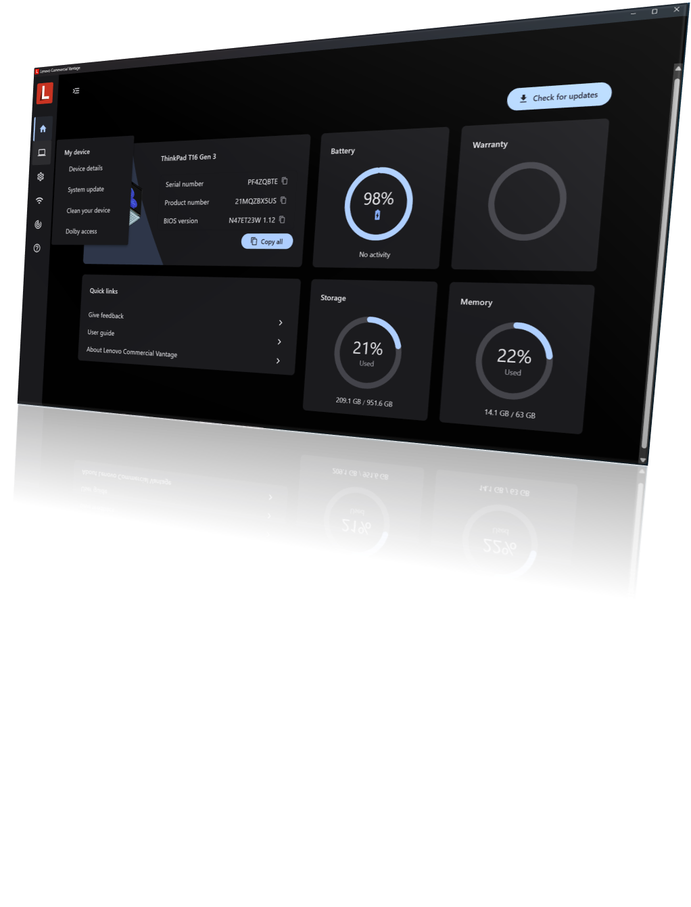

Commercial Vantage
The preloaded app for updates and Lenovo settings, fully controlled by IT.
Inventory
- What it is
- The app preloaded on Lenovo commercial PCs: a UWP front end, add-ins that perform diagnostics, driver and firmware updates, and the Lenovo Vantage Service that keeps them running and current.
- Get it
- Preloaded on Commercial devices for easy adoption in an Autopilot scenario. For custom images, deploy the main app and add-in files provided in the Enterprise Package on Lenovo Support which includes deployment scripts, ADMX templates and installation tools.
- Configure it
- Group Policy (ADMX templates) or Intune. Commercial Vantage Policy Manager builds the Intune policy for you.
- Guide
- docs.lenovocdrt.com/guides/lcv
What it does
Commercial Vantage is the central app connecting users to their Lenovo device. Out of the box it lets users:
- Customize the PC experience.
- Install system updates for drivers and firmware.
- Manage settings for Lenovo-specific hardware.
- Update Lenovo dock firmware when a dock is attached.

IT administrator control
Every part of the experience is customizable by policy. You choose which features users see, filter which updates are offered, and can drive System Update entirely from a local repository instead of Lenovo's servers.
- Update filtering. Separate filters for the manual Check for Updates flow and for scheduled Auto Update, by package type and severity.
- Local repositories. Point System Update at a repository built with Update Retriever or ThinkVantage Repository Manager. Test Content Mode processes only packages marked Test, so you can pilot updates first.
- Your branding on the prompts. Set a Company Name policy and drop a
companylogoimage into the System Update resources folder to brand the reboot dialogs. - SU Helper. A command-line utility for controlling the System Update process from your own tooling, installable on its own or with
VantageInstaller.exe.
Commercial Vantage in 2026
- New UI design. A modernized interface with a simpler, more intuitive layout for users.
- Simplified Auto Update. Streamlined Auto Update flows reduce complexity for users and administrators.
- Device Orchestration. Deeper integration with Lenovo Device Orchestration (formerly Lenovo Device Manager) for fleet-wide visibility, including driver rollback controlled from the console.
The September 2026 release (v20.2606.24) adds an in-product tutorial covering Welcome, System Update, Device Diagnostics and Battery Health, renames Hardware Scan to Device Diagnostics, and adds a policy that stops Auto Update from running as soon as possible after a missed schedule, waiting instead for the next window.
Recent releases also changed scheduling and reboots. The Auto Update time policy now starts a 90-minute window, so devices do not all update at the same moment. A Reboot delay time policy warns users before a Reboot Type 5 restart. Downloads can use BITS where peer caching is in place. SU Helper gained -scanonly, which records results in the Lenovo_Updates WMI class, and -noreboot, which leaves the restart to your process.
Reading the logs
Invoke-LnvCVLogViewer, new in Lenovo.Client.Scripting 2.4, parses the System Update add-in log into a color-coded summary of the session, scan results, per-package install results, errors and warnings.
Invoke-LnvCVLogViewer -LogFile <path to the System Update add-in log>Intune policy configuration, repository setup and log analysis are covered in full in the Commercial Vantage guide on the docs site.